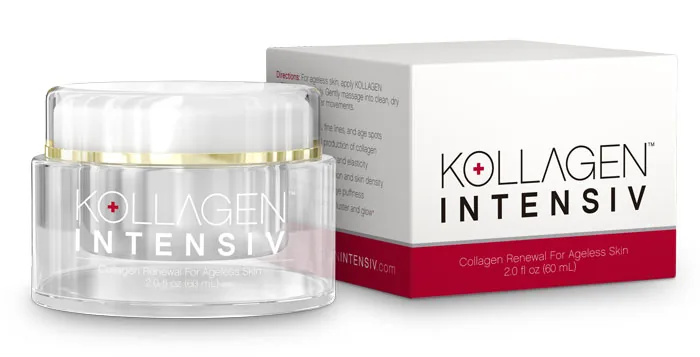
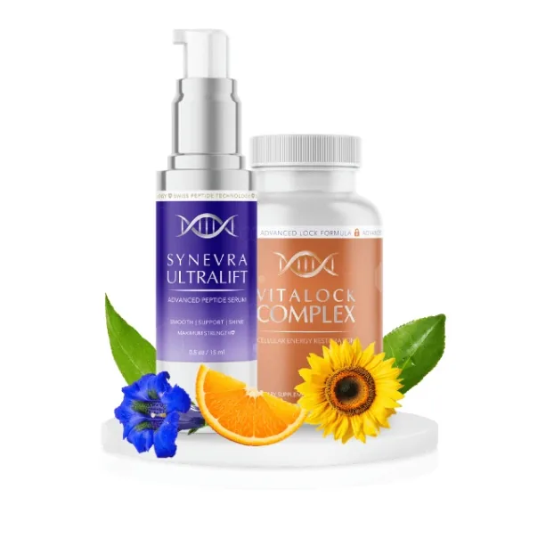
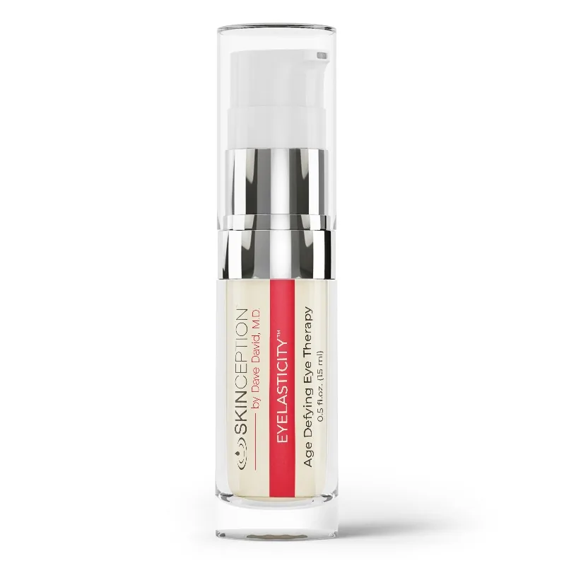

Rides, Taches et Cicatrices : Analyse des Actifs et Guide de Superposition
Nous avons évalué les formules de pointe aux peptides brevetés, inhibiteurs de mélanine et réparateurs tissulaires. Découvrez notre analyse fondée sur des preuves de 5 soins ciblés pour 2026.
Avis éditoriaux. Les liens d'affiliation sont indiqués. • Formules aux ingrédients étudiés. • Transparence Affiliation

Kollagen Intensiv™
Le fabricant rapporte que le peptide suisse Syn-Coll® stimule la synthèse de collagène de 354% pour lisser les rides profondes.

Illuminatural 6i™
4 actifs botaniques ciblent la tyrosinase et estompent taches solaires et mélasma sans hydroquinone.

Dermefface FX7®
10% Symglucan® et Pro-Coll-One+ normalisent le collagène de type I pour lisser les cicatrices visibles.
Anti-Âge & Régénération du Collagène
Formules cliniques ciblant la synthèse de collagène et le relâchement des micro-tensions faciales.
Kollagen Intensiv™
Le fabricant indique que le peptide suisse Syn-Coll® stimule la synthèse de collagène jusqu'à 354% pour lisser les rides profondes et soutenir la fermeté.

Synevra UltraLift™
Le fabricant indique que le complexe dipeptide SYN-AKE® détend les micro-contractions musculaires jusqu'à 82% pour lisser les plis du front et les rides d'expression.
Taches Brunes & Hyperpigmentation
Inhibiteurs botaniques de tyrosinase conçus pour bloquer la surproduction de mélanine sans décapage chimique.
Illuminatural 6i™
Formulé avec 4 actifs végétaux pour inhiber la tyrosinase. Estompe taches solaires, mélasma et traces d'acné sans hydroquinone.

Eyelasticity™
Thérapie peptidique médicale avec Eyeseryl® et Regu®-Age pour drainer l'eau accumulée, sceller les capillaires et estomper les cernes en 15 jours.
Remodelage & Réparation des Cicatrices
Traitement clinique ciblé pour la normalisation du collagène et l'atténuation des cicatrices chirurgicales et d'acné.
Dermefface FX7®
Formulé avec 10% de Symglucan et Pro-Coll-One+ ; le fabricant indique une hausse du collagène de Type I jusqu'à 1 190% pour aider à lisser les cicatrices.
Quelle formule convient le mieux à votre peau ?
Répondez à 3 questions rapides pour recevoir une recommandation fondée sur les preuves parmi nos 5 soins évalués.
Question 1 sur 3 : Quel est votre objectif cutané prioritaire ?
Question 2 sur 3 : Quel format d'application correspond à votre routine ?
Question 3 sur 3 : Quelle est votre tranche d'âge ou niveau d'intensité ?
Résultat du Diagnostic
Explication personnalisée de votre produit recommandé.
La Science des Ingrédients Actifs
Pourquoi les peptides brevetés et les actifs botaniques surpassent les lotions génériques.
Syn-Coll® (Palmitoyl Tripeptide-5)
Un peptide conçu pour stimuler le mécanisme naturel de production de collagène par activation du TGF-Bêta. Les données du fabricant indiquent une hausse de 354% de la synthèse de collagène.
Alpha-Arbutine & Niacinamide
Issue de la busserole, l'Alpha-Arbutine inhibe la tyrosinase et stoppe la mélanine sans amincir la peau ni causer d'effets secondaires nocifs.
Hyaluronate de Sodium
Retient jusqu'à 1.000 fois son poids en eau, attirant l'hydratation dans les couches dermiques pour repulper instantanément les ridules.
Beurre de Karité & Extrait de Thé Vert
Riches en acides gras essentiels et antioxydants, protégeant la barrière cutanée contre les radicaux libres et l'oxydation UV.
Foire Aux Questions
La plupart des utilisateurs constatent une hydratation et une douceur améliorées en 7 à 14 jours avec Kollagen Intensiv. Pour les rides profondes, les taches avec Illuminatural 6i et les cicatrices avec Dermefface FX7, les résultats maximaux se manifestent entre 30 et 90 jours.
Oui. Associer des crèmes raffermissantes et des sérums ciblés est une approche de superposition fondée sur des données probantes. Par exemple, appliquer Illuminatural 6i sur les taches et Kollagen Intensiv sur l'ensemble du visage assure une synergie totale.
Les 5 solutions disposent de garanties de satisfaction complètes. Les soins Skinception (Kollagen Intensiv, Illuminatural 6i, Dermefface FX7) incluent 90 jours de garantie de remboursement. Eyelasticity offre 67 jours de garantie, et Synevra UltraLift propose 60 jours de garantie fabricant.
Oui. Toutes nos formules évitent les substances irritantes comme l'hydroquinone, le mercure, les stéroïdes et les parabènes. Nous conseillons de faire un test préalable de 24h sur l'intérieur du poignet.